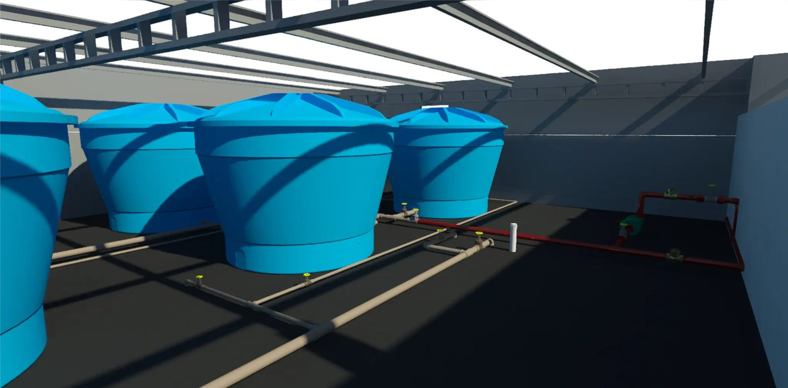

Um orçamento confiável não depende só de bons quantitativos — depende também de preços de referência sólidos. É aí que entram bases como SINAPI e SICRO, especialmente quando o assunto é obra pública.
São sistemas de referência de custos da construção, com preços de insumos e composições de serviços atualizados periodicamente:
Ancorar o orçamento em bases reconhecidas dá consistência e defensabilidade aos preços. Em obras públicas, isso é praticamente um requisito: o orçamento precisa ser auditável e compatível com as referências aceitas pelos órgãos de controle.
Mais do que um valor por item, as bases trazem composições: a estrutura de mão de obra, materiais e equipamentos que formam o custo de cada serviço. Entender a composição é o que permite adequar a referência à realidade da sua obra com critério.
No fluxo BIM 5D, os quantitativos extraídos do modelo são associados a composições de custo ancoradas nessas bases (ou no banco de dados da própria empresa). O resultado é um orçamento que une duas forças: quantidade rastreável, vinda do modelo, e preço defensável, vindo de uma referência sólida.
Fale com a UCHOA BIM & CUSTOS e una quantitativos do modelo a bases de custo confiáveis.
Solicitar Orçamento